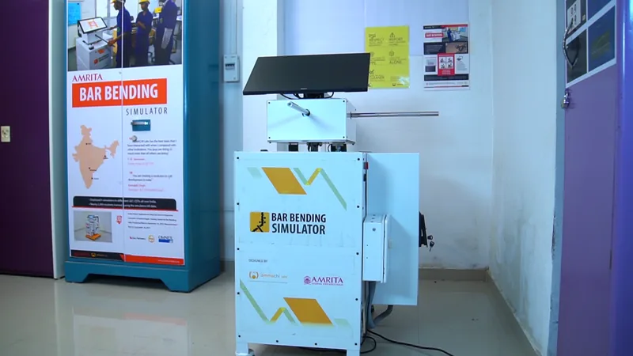
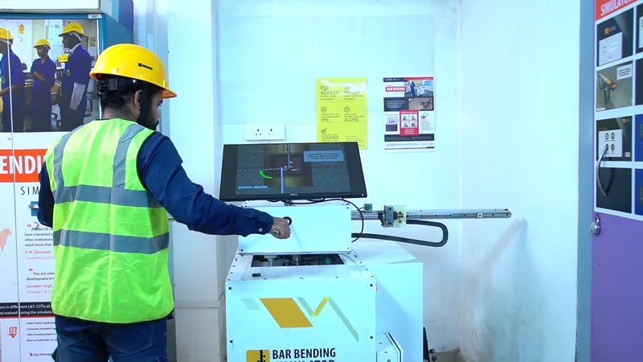
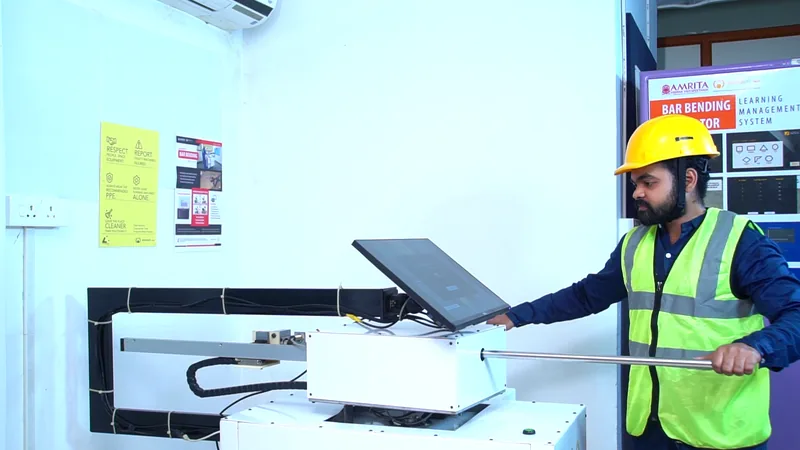
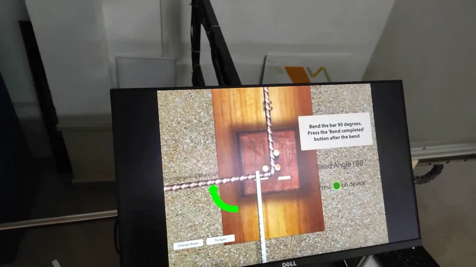
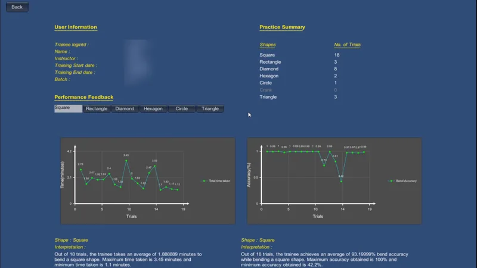
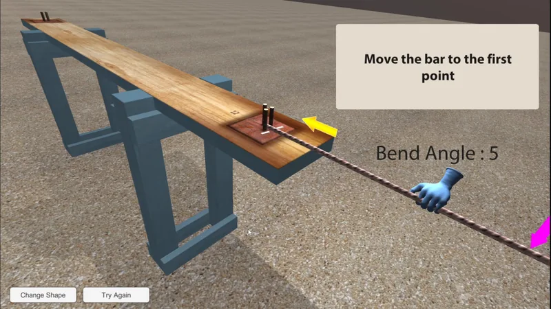

Work Bar Bending Simulator
Bar Bending Simulator
A training simulator driven by a physical rod-and-lever rig, which I upgraded and maintained.
What the video shows
62-second silent overview: photos of the bar-bending rig and touchscreen, phone footage of the rod being worked with the on-screen bend guide and live angle, a return-to-zero counter and a results table of expected versus achieved angles; then the current software's credits, shape, diameter and grade selection, reports with graphs (personal details blurred), a trainee-versus-expert comparison and the simulation waiting for rod input.
- My role
- Developer on the 2026 modernization: engine upgrade, maintenance, debugging and rig support for an inherited simulator.
- Team
- 2 developers (including me) on the 2026 modernization
- Organisation
- AMMACHI Labs, Amrita Vishwa Vidyapeetham
- My work
- 2026
- Status
- Maintained. The simulator has been installed at L&T Construction Skills Training Institutes since its original release.
- Context
- Originally developed by AMMACHI Labs in 2014–2016 with input from L&T's Construction Skills Training Institute. AMMACHI Labs project page
- Engine
- Unity (legacy Unity 5-era project, maintained on 2019 LTS; upgrade path explored to Unity 6) · C#
- Platform
- Windows touchscreen kiosk connected to a PLC-driven bending rig
- Built with
The experience
Bending reinforcement bars into stirrups and links is a basic construction skill, and getting the angles and lengths wrong wastes steel. The simulator lets a trainee practise on a physical rig: a rod that slides through a bending table and a lever that bends it, connected to a touchscreen running the simulation.
A trainee logs in, chooses a shape (square, rectangle, triangle, diamond, hexagon, circle or crank), a bar diameter and a steel grade, and resets the rod to its start position. The screen then guides each bend: move the bar to the marked point, bend to the target angle while the live angle and a colour cue show progress, confirm the bend on the rig, and rotate the lever back to zero before the next one. At the end, a results table compares the expected and achieved angle for every bend. Instructors manage batches and trainees and look at reports: per-shape assessment sheets, time and accuracy graphs across trials, and a trainee's bend compared with an expert's.
My work
The simulator was originally developed by AMMACHI Labs in 2014–2016 for L&T's construction skills training, well before I joined. In 2026 I took it over as a Unity 5-era project, working with one other developer, to bring it up to date and keep it running. My work was upgrading, maintaining and debugging it. I moved the project onto newer Unity versions, then fixed and extended it across the hardware link, the simulation flow, the database and the reports. I also took part in hardware fixes on the rigs.
The upgrade went through Unity 2018 to a maintained 2019 LTS line, where day-to-day fixes now happen. Upgrades to 2020, 2022 and Unity 6 were explored on a separate branch so the working line was never put at risk. My work on the maintained line includes:
- a rewritten pipe server, with diagnostic logging of the raw values coming from the rig's controller (release logging is opt-in);
- fixes to shape results and bar rotation for several shapes;
- database and report paths moved to locations that work in installed builds;
- detection of the rod's linear movement;
- over-extension warnings and an explicit confirmation step in the bend flow.
The procedural bending, evaluation tables and reporting described below predate me. My part is keeping them working, correct and maintainable on current tools.
How it works
- RigRod position and lever angle are read by the rig's PLC.
- Controller clientAn OPC client exchanges values with the PLC.
- Named pipesTwo pipes: one streams rod position, angle and stop flags into Unity; the other tells the rig which diameter and grade were chosen.
- SimulationMoves and bends a procedural bar, guides the trainee and evaluates each bend.
- RecordsTrials and angle time series go to SQLite; reports and PDFs read them back.
Talking to the rig. On start-up the simulator opens two named pipes. The inbound pipe receives short text packets with the rod's linear position, the lever angle and stop flags; the outbound pipe sends a code for the selected bar diameter and grade every 50 ms, but only when it changes. The external OPC client bridges these values to the PLC on the rig.
A bar built in code. The bar is a procedural mesh: an 18-sided tube along a skeleton of points. The rod's position slides the bar through the bending table. When the lever moves past the pivot, a bend is inserted into the skeleton and new rings are added along an arc every 18° of lever travel. Bends only accumulate forward, so the return stroke never "unbends" the bar, and the trainee must bring the lever back to zero before the next bend.
Checking each bend. Every shape defines its bends, target angles, marker positions and colour thresholds. When a shape is finished, each side and hook is looked up from the angle the lever reached for that bend and compared with the reference length; a bend passes if it is within ±5 mm. The result, the angles and a time series of the bend are stored per trial.
Reports. Per-shape assessment sheets are rendered to PDF; summary and learning-pattern graphs show time taken and bend accuracy over trials; a comparison view plots a trainee's bend angle against an expert trial.
Decisions that shaped it
Keep a working line while exploring the upgrade. The rig has to keep working at training sites, so fixes go into a stable 2019 LTS line while newer engine versions are explored separately. The two histories are kept apart rather than mixed.
Make the hardware link observable. Most field problems look the same from the screen: the bar doesn't move as expected. Logging the raw values coming from the controller, with the logging switchable in release builds, turns "it doesn't work" into something that can be diagnosed.
Guard the physical flow. Over-extension warnings and an explicit return-to-zero step protect the sequence from a rod or lever left in the wrong place, which a screen-only game never has to deal with.
Screens
-

The bar-bending training rig and its touchscreen. -

The rig in use during an earlier on-site demonstration. -

Working the physical rod on the rig. -

On-site video frame: the bend guide with the live angle indicator. -

Practice summary report with time and accuracy graphs (personal details blurred). -

With no rig connected, the simulation waits for rod input.